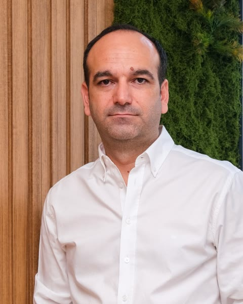

Yanlışını, sebebiyle birlikte öğren.
Sadece doğru cevabı görme; neden yanlış yaptığını öğren. Her sorunun dayandığı madde yanında.
Sınavını seç
Üyelik gerekmez · yaklaşık 30 dakika
Günün sorusu yükleniyor…
Neden?
Mevzuat dayanağı
Nöbetçi soruyu adım adım çözer: kritik kelime, ilgili kural, şıkların karşılaştırması, sonuç.
Nasıl çalışır?
Soruyu çöz
Sınavdaki gibi beş şık. Bilmiyorsan "bilmiyorum" de, tahmin etme.
Nedenini öğren
Her yanlış şıkkın neden yanlış olduğu ve dayandığı madde.
Yanlışını kaydet
Yanlış yaptığın soru kendiliğinden yanlış kutuna düşer.
Tekrar çöz
2 gün sonra yeniden karşına çıkar; bilirsen 7 gün sonra son tur.
Ücretsiz dene
30 soruluk seviye testi: hangi derste ne kadar hazırsın, sonunda görürsün. Üyelik gerekmez.
Nöbetçi
Dün yaptığın yanlışlar bugün tekrar karşına çıkar. Unuttuğun yer sınavdan önce yakalanır.
Gerçek kaynak
Cevabın dayanağını görürsün: kanun maddesi, standart paragrafı, tebliğ. "İnternette böyle yazıyor" kaynak sayılmaz.

Tetikte'nin hikâyesi
Tetikte'yi İzmir'de kurulu Dizdar Denetim Danışmanlık ve Yazılım A.Ş. yapıyor; kurucusu Cem Dizdar. Şirket vergi, iç denetim, IFRS raporlaması ve maliyet sistemlerinde çalışıyor.
Tetikte bu işin içinden çıktı: "bu soruda neden yanlış yaptım?" sorusunu maddesiyle birlikte cevaplamak için. Hakkımızda ve tam künye →
Herkesin bir hocası var; senin bir nöbetçin var.